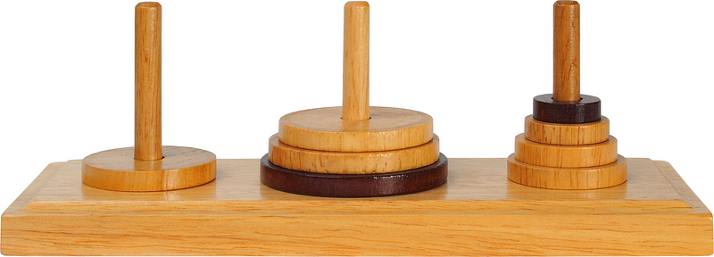
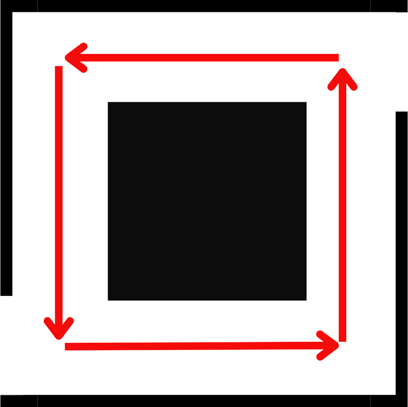
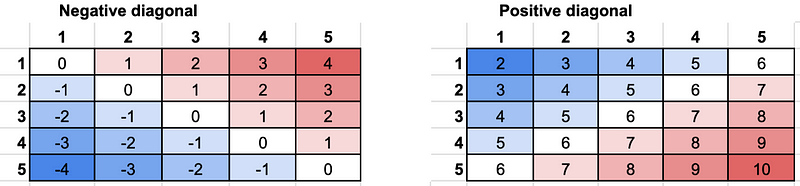
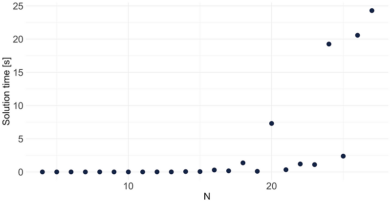

prepare_mix <- function(){
if(is_compost_well_mixed == TRUE){
stop()
} else {
stir()
prepare_mix()
}
}Rationale
Recursion and backtracking are very well known programming techniques. If you are a Python developer, for example, it is almost certain you’ve come across recursion at some point. Recursion and backtracking are also very popular job interview questions.
Despite their popularity, I have rarely if ever seen them implemented in R. Whatever the reason is, I am sharing here how, why, and when you might want to implement them in R.
Recursion
Recursion is a well known programming technique. It allows a function calling itself.
In plain English, you can think of a recursion function as the set of instructions you would use to mix flour and eggs. Let’s call the function prepare_mix:
Let’s unpack this:
- If the compost is mixed, we stop. This is the exit clause. The exit clause is a fundamental part of any recursion function: we need to have a case that stops the recursion. The exit clause defines when the job is done.
- If the job is not done, we do something. In our example, we stir the compost.
- Finally, prepare_mix calls itself to check if we are done stirring, or to continue stirring otherwise.
In more practical examples, you have most likely come across recursion while preparing for interviews. Questions such as: “write a function to find the \(n^{th}\) element of the Fibonacci sequence”, or “write a factorial function”. These are questions that can easily be answered using recursion.
Recursion in R
Recursion is pretty straightforward to implement in R, and not dissimilar to what you would do in, let’s say, Python.
The toy example we will consider today is the Hanoi Tower. Recursion tends to work pretty well to solve puzzles and games (the linked Wikipedia page will give Python’s solution). The Hanoi Tower is a puzzle where we have three rods and a pile of discs of decreasing diameter piled up on the left rod. Your task is to move all the discs from the rod on the left to the rod on the right. You can move only one rod at the time, and you can never place a disc on top of a smaller disc.

The R solution is very similar to Wikipedia’s Python solution.#' @param n the number of discs
#' @param source the name of the rod where all the rods are at the start,
#' i.e. "A"
#' @param destination the name of the rod where all the rods are at the end,
#' i.e. "C"
#' @param auxiliary the name of the rod between the source rod and the
#' destination rod
#' i.e. "B"
TowerOfHanoi <- function(n, source, destination, auxiliary){
# stop clause: if we have only 1 disc, we are done, last move
if(n==1){
print(paste0("Move disc 1 from ",
source,
" to ",
destination))
return(invisible(NULL))
}
# recursive call, switching around the auxiliary and the destination
TowerOfHanoi(n-1, source, auxiliary, destination)
print (paste0("Move disc ", n," from ", source, " to ", destination))
# recursive call, switching around all rods
TowerOfHanoi(n-1, auxiliary, destination, source)
}
TowerOfHanoi(3, "A", "C", "B")[1] "Move disc 1 from A to C"
[1] "Move disc 2 from A to B"
[1] "Move disc 1 from C to B"
[1] "Move disc 3 from A to C"
[1] "Move disc 1 from B to A"
[1] "Move disc 2 from B to C"
[1] "Move disc 1 from A to C"It is easier to understand the algorithm if you think about what happens if you have only one disc. Then try with two, and finally three. From three discs onwards, the mechanism is always going to be the same.
Backtracking
Backtracking is a technique often used in conjunction with recursion. It allows us to trace back your steps in a recursion call stack, and explore another path. Backtracking is used to:
- Find at least one solution in a problem that might have many. For instance, find at least one solution to a sudoku puzzle.
- Find all the solutions to a problem, for instance find all the possible solutions to a sudoku puzzle.
- Optmisation problems. For instance, find the shortest path connecting two points.
How does a backtracking solution work? Let’s consider the example of finding the path out of a maze, and write some pseudocode for it.
get_out_of_the_maze <- function(path_tried){
if (am_i_out == TRUE){
# we are done
stop()
}
# recursive call
get_out_of_maze(path_tried)
# clean up allows to to try other paths when we trace back
path_tried = ifelse(path_tried == "left", "right", "left")
}What are we doing here? Part of the solution is similar to what we already know from recursion: we have an exit clause to make sure we stop the recursion once we found the exit of the maze. We then recursively try to go left or right.
The main difference with recursion is that we have a clean up step. In the stack of recursive calls, the computer will “remember” if we choose left or right at any particular interaction. With recursion we can “clean up” that wrong choice and try another path.
A world of caution in backtracking problems, including this “find the exit of a maze” challenge: make sure you do not have “circular” paths. Circular paths tend to send backtracking into an infinite loop if not planned for carefully.

Backtracking in R
Let’s see how we can implement backtracking in R. Once again, the solution is not dissimilar to what you would do in Python.
We will consider a pretty standard example: the N-Queens problem. In this problem, we must place N Queens in a N*N board in a such a way that none of the Queens can attack any other. A Queen can attack another Queen if they are in the same row, column, or diagonal.
We will model our answer to this Python solution.
This is a well suited problem for backtracking: there are no “circular” paths, and we want to use brute force to find the solution. We will try to place a Queen in a square of the board. If that works, great, let’s try to put down another one. If it does not work, we remove the Queen and try to put it down somewhere else.
Before we start to look into the solution, let’s explore the problem a bit better by using the N=4 case, the second smallest N with a solution after N=1.
In a brute force approach, we will start by placing a queen in row 1, column 1. We cannot place any more queens in row 1, or in column 1. When we move to the second row, we might want to try to put a queen in the third column (we will talk about diagonals, i.e. column 2, later). This means that columns 1 and 3 are now occupied. When we move to the third row, we know that we could only use columns 2 or 4. Because we designed our solution to move by rows we only need to keep track of the columns occupied. The loop itself will keep track of the rows.
What about the diagonals? What we can do is to remember a property of diagonals in an array. When we move diagonally right-left/top-bottom the sum of the indexes in any given diagonal in the same direction never changes (positive diagonal). Similarly, when we move left-right/top-bottom, the difference between the row index and the column index for a given diagonal never changes (negative diagonal)

What does this mean for us? It means that to check if a diagonal is already occupied, we only need to check if a given index is taken for either of the positive or the negative diagonal. To solve our problem we only need three small vectors: column index, positive diagonal index, and negative diagonal index.
We will create a board to store a “work in progress” solution. Technically this is not needed: we could re-construct it based on the row and column indexes.
Time to write the backtracking function.
#' @title SolveNQueens
#' @decription recursive function with backtracking to solve the NQueens
#' problem
#' @param n numeric. The number of queens
#' @param rowN row index
#' @param board the array with an attempt at a solution. "." represents an
#' empty spot. "Q" is a spot occupied by a queen
#' @param colN indexes of columns occupied by a Queen
#' @param posDiag indexes of the positive diagonals
#' occupied by a Queen
#' @param negDiag indexes of the negative diagonals
#' occupied by a Queen
#' @return Nothing. Prints the first solution found
solveNQueens <- function(n, rowN = 1, board = NULL, colN = NULL,
posDiag = NULL, negDiag = NULL){
# used at first call to create the board of results
if(is.null(board)){
board <- array('.', c(n, n))
}
#loop through the columns
for (cc in 1:n){
# if the position does not have a queen in the same column, posDiag,
# or negDiag then add a Q to the board
if (sum(c(cc %in% colN,
(rowN + cc) %in% posDiag,
(rowN - cc) %in% negDiag)) == 0){
board[rowN, cc] <- "Q"
# add the new occupied column, posDiag, and negDiag to the vectors of
# the taken positions
colN <- c(colN, cc)
posDiag <- c(posDiag, (rowN + cc))
negDiag <- c(negDiag, (rowN - cc))
# solution found
if(sum(board == 'Q') == n){
# we do not stop the funcitons here, so it will print us all the possible solutions
print(board)
return(NULL)
}
solveNQueens(n, (rowN + 1), board, colN, posDiag, negDiag)
# clean up
colN <- colN[colN != cc]
posDiag <- posDiag[posDiag != (rowN + cc)]
negDiag <- negDiag[negDiag != (rowN - cc)]
board[rowN, cc] = "."
}
}
}
solveNQueens(n = 4) [,1] [,2] [,3] [,4]
[1,] "." "Q" "." "."
[2,] "." "." "." "Q"
[3,] "Q" "." "." "."
[4,] "." "." "Q" "."
[,1] [,2] [,3] [,4]
[1,] "." "." "Q" "."
[2,] "Q" "." "." "."
[3,] "." "." "." "Q"
[4,] "." "Q" "." "." This function is a lot simpler than it looks.
- First of all, it loops through every column of a defined row rowN.
- If that position is occupied because there is already a queen in the same column, positive diagonal, or negative diagonal indexes, then we skip it.
- If the position is free, then we add the indexes of the corresponding column, positive diagonal, and negative diagonal index to the vectors of occupied positions. We also replace the . with Q on the board with the temporary solution.
- We then continue the recursion on the next row: rowN + 1.
- Finally, we need to make sure we clean up after the recursive call, so that the backtracking can keep an up to date record of the occupied positions. Basically, if we could not place any queen in the row, we remove the queen from the row by replacing the Q with a ., and we remove the indexes of that queen column, positive and negative diagonals from the list of occupied positions.
What about performance?
This is a fair question. Recursive and backtracking algorithms are not always the fastest option. If our problem has too many open options, it can take a long time before we get to a solution.
I would advise to try to limit the number of attempts whenever possible. For instance, in the Sudoku problem, we could try every possible solution: the grid is not that large, just a 9X9 grid. However, we could combine the brute force approach with more advanced techniques used by human speed solvers. These techniques can significantly reduce the number of places where a digit could go. You can have a taste of those techniques here.
In case you are curious, this is how my Apple Mac Air M1 copes with this algorithm up to N=27.

You’ll notice that there are some “ups and downs”. Higher N does not always mean longer solution time. This is because the solution time depends on how “lucky” the algorithm is in finding the right solution with brute force.
You might also ask: “ Why stop at N = 27?”. Well, I did calculate up to N = 30, but after N=27 things start to become very slow: N = 28 was solved in 2.8min, N = 29 in 1.5min, and N = 30 in no less than 56.8min. Yes, almost 1h to solve that one. For those of you keeping track on the R Vs Python scoreboard, Python’s equivalent code solve for N = 30 in just over 3min. Maybe this is another reason why I have not seen recursion and backtracking used in R…
This performance test highlights why it is important, whenever possible, to help the algorithm by making some educated guesses, rather than trying every single option blindly.
Wrap up
There you have it. As you can see, R implements recursion and backtracking in a very similar way to Python. Recursion and backtracking are very important software techniques that can be applied in many use cases. I have hardly ever seen it in R, maybe because performance does not scale well with the complexity of the problem, but for simpler problems they are definitely tools I suggest you keep in your toolbox.